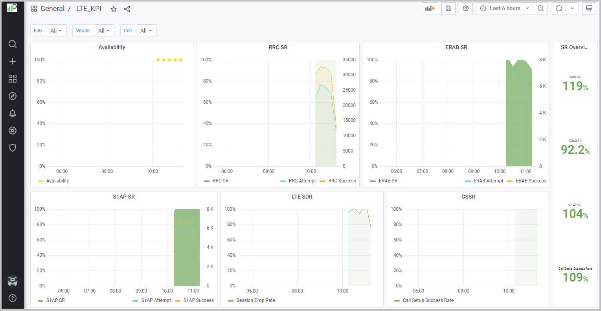

Access PW EMS Monitoring and Reporting
Use this task to access the PW EMS Monitoring and Reporting application.
- Enter the Web UI (HTTP/HTTPS) address to access the PW EMS Monitoring and Reporting application in your Web browser.
- In the login Welcome to PW EMS Monitoring and Reporting dialog box, enter the user login credentials supplied by your administrator. If you are loging in for the first time as an Administrator, the following default sign-in screen displays.
-
Enter the default PW EMS Monitoring and Reporting system administrator user
credentials in the sign-in dialog box. This user is a "super administrator" who
belongs to the default organization and has all the privileges necessary to
setup the default organization and its users, and who is enabled to access
devices or groups of devices:
Field
Description
Username
Enter the default user name Administrat0r. Password
Enter the default password Passw0rd_. After logging in, the PW EMS Monitoring and Reporting window displays with the LTE_KPI dashboard in the main window by default after the login.